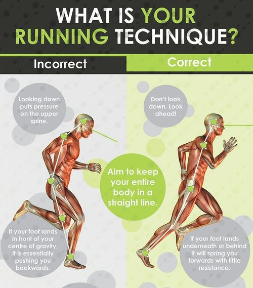

Algunos corren para estar en forma. Otros corren para batir su marca y otros para relajar su mente. El "running" abarca a todos. Y a fuerza de demostrar sus beneficios, es hoy uno de los deportes más practicados, tanto en Argentina como en todo el mundo por niños, adultos y abuelos, hombres y mujeres.
Según señalan los expertos unas de las cualidades del running es que el cuerpo se pone en acción sin la necesidad de seguir ritmos ajenos, no exige tiempos, ni niveles, los objetivos son personales. Por eso, es una de las actividades más simples y completas a la vez.
Correr tonifica, elimina grasas, favorece al corazón, estimula la agilidad, pone más resistencia a la fatiga y mejora el equilibrio mental, una de las cualidades que más buscan hoy las personas.
Desde siempre, correr fue una de las premisas para mantener un buen estado físico y una mente relajada. Sus beneficios son múltiples, además está comprobado científicamente que al practicar cualquier tipo de deporte, incluso una caminata rápida, el cuerpo genera endorfinas. Esta sustancia conocida como "la hormona de la felicidad" actúa como neurotransmisor que logra inhibir la transmisión del dolor, regular el apetito, liberar las hormonas sexuales y por ende generar una genuina sensación de bienestar.

La diferencia entre el footing y el running simplemente radica en que años atrás la mayoría de las personas no se organizaban en grupos para salir a correr. Era una actividad solitaria.
En los últimos años. los gimnasios, los personal trainners y las marcas comenzaron a organizar equipos para transformar el running en una actividad conducida, grupal y sobretodo más placentera. El running es una practica más elaborada que el footing y propone diferentes tipos de carrera: cortas, medianas, largas, de calle, combinadas y de aventura donde los participantes atraviesan los diferentes terrenos que ofrece la naturaleza.
Asimismo, el perfil del corredor cambió notablemente. No hace falta ser un deportista calificado para tener como rutina recorrer entre 10 y 15 kilómetros. Los entendidos aseguran que la mayoría de los participantes de esta "auto competencia" oscilan entre los 25 y 35 años. Hay desde profesionales hasta oficinistas y ejecutivos de empresas.
Los hombres son los más aficionados a este tipo de entrenamiento, aunque en los últimos tiempos se registró una verdadera explosión de mujeres, que entrenan a diario y participan incluso en las carreras más exigentes.
Las estadísticas dan fe que en los últimos dos años mas de un millón y medio de personas se inscribieron en competencias de calle o carreras de aventura, sólo en Capital federal y el Gran Buenos Aires. La cifra es asombrosa pero responde a una clara tendencia mundial.

Segun detalla el "Club Road Runners of America" son diez los principales motivos por lo que es bueno correr:
1) Es el modo más efectivo para obtener una buena salud cardiovascular. treinta minutos diarios, cuatro días a la semana, le otorgarán una muy buena aptitud física en el más corto plazo.
2) Es el deporte aeróbico de más fácil acceso. Sin importar donde viva, a donde viaje, siempre encontrará un lugar donde pueda correr. No necesita inscribirse en un gimnasio ni pensar en llevar demasiado equipo.
3) Es fácil aprender y no cuesta. Sólo necesita buenas zapatillas y ropa deportiva o cómoda para poder practicarlo. Todos saben como correr y es simple adquirir información sobre entrenamiento.
4) Es la mejor forma que existe para liberarse del estrés. Treinta minutos corriendo harán maravillas para disolver el stress adquirido en el trabajo u otro ámbito.
5) Es un buen ejercicio en cualquier programa de control de peso. Pocas otras actividades queman calorías tan rápidamente.
6) Correr es un método de entrenamiento flexible. Puede hacerlo a su propio ritmo, con o sin compania y en el momento que a usted le sea conveniente.
7) Lo hace sentir bien. Su salud, su autoestima y confianza se incrementaran con un entrenamiento regular.
8) Ofrece oportunidades únicas a los que correr por diversión, de encontrarse con atletas reconocidos mundialmente.
9) Se puede practicar en familia y a cualquier edad. Hay programas de entrenamiento para niños, para mayores de 40, y también eventos realizados para toda la familia. Correr además promueve la amistad.
10) Está en buena compañía. Millones de personas practican este deporte ya sea por diversión, para mejorar su estado físico o para competir. Usted encontrará clubes de corredores en todas las comunidades.